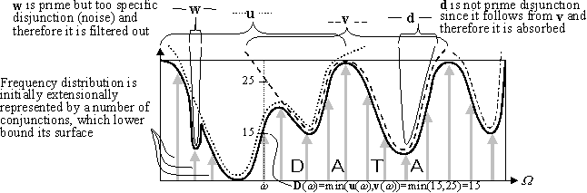
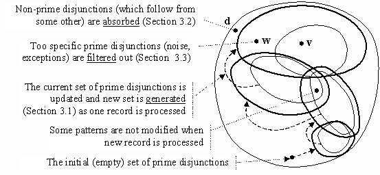

Alexandr A. Savinov
GMD
-- German National Research Center for Information Technology
AiS.KD
-- Autonomous Intelligent Systems Institute, Knowledge Discovery
Team
Schloss Birlinghoven, Sankt-Augustin, D-53754 Germany
Tel: +49-2241-142629, Fax: +49-2241-142072
E-mail: savinov@gmd.de,
http://ais.gmd.de/~savinov/
We present a new algorithm, called Optimist, which generates possibilistic set-valued rules from tables containing categorical attributes taking a finite number of values. An example of such a rule might be “IF HOUSEHOLDSIZE={Two OR Tree} AND OCCUPATION={Professional OR Clerical} THEN PAYMENT_METHOD={CashCheck (Max=249) OR DebitCard (Max=175)}. The algorithm is based on an original formal framework generalising the conventional boolean approach in two directions: (i) finite-valued variables and (ii) continuos-valued semantics. Using this formalism we approximate the multidimensional distribution induced from data by a number of possibilistic prime disjunctions (patterns) representing the widest intervals of impossible combinations of values. The Optimist algorithm described in the paper generates the most interesting prime disjunctions for one pass through the data set by means of transformation from the DNF representing data into the possibilistic CNF representing knowledge. It consists of generation, absorption and filtration parts. The set-valued rules built from the possibilistic patterns are optimal in the sense that they have the most general condition and the most specific conclusion. For the case of finite-valued attributes and two-valued semantics the algorithm is implemented in the Chelovek rule induction system for Windows 95.
The field of knowledge discovery in databases or data mining has been paid a lot of attention during recent years as large organisations has accumulated huge databases and begun to realise the potential value of the information that is stored their. One specific data mining task is the mining of dependencies in the form of rules. The task is to determine hidden patterns that characterise the problem domain behaviour from a large database of previous records and then to represent them in the form of rules. The rules can then be used either for description or for prediction purposes.
The problem of rule induction can be stated as follows: given a database consisting of a number of records, where each record is a sequence of attribute values; find rules which by their conditions select wide intervals in the multidimensional space where the distribution of values in conclusion is highly inhomogeneous, i.e., contains large quantity of information. In the case where variables in condition and conclusion of such rules may take only one value we obtain well known association rules [1-3], e.g.:
IF x1=a13 AND x2=a25 THEN x3=a32 (Support=s, Confidence=c)
If the variables are allowed to take as a value any subset of the domain then we obtain so called set-valued rules having the form:
IF x1={a13, a14} AND x2={a21, a27} THEN x3={a33, a36}
Here aij are values of the i-th variable. Each variable in such a rule may take any value from the corresponding subset, e.g., x1 may be equal to either a13 or a14.
In the paper we consider the problem of mining set-valued rules where all variables have a finite number of values, the universe of discourse is equal to the Cartesian product of all sets of the values, and the semantics is represented by a frequency distribution over the universe of discourse (the number of observations that belong to each point). The condition of such rules selects a subspace in the form of conjunctive interval within the universe of discourse. Then the conclusion consolidates all information about the problem domain from this subspace by projecting the semantics restricted within this interval onto the goal variable. The problem is that the number of all possible conjunctive intervals of the multidimensional space is extremely large and it is necessary to have some criterion of interestingness for the rules. One obvious criterion is that the more general the rule condition is, i.e., the larger interval it selects is, the more interesting the rule is. However, if we take too general interval and use it for the rule condition, it may well happen that the rule will not be interesting since the conclusion is not surprising, i.e., it does not contain much information. For example, the rule
IF x1={a13, a14} THEN x3={a31 (Max=151), a32 (Max=152), a33 (Max=153)}
is not interesting since it says that under these conditions the variable x3 takes any of its 3 values with approximately the same possibility (almost constant possibility distribution in conclusion does not bear much information and hence the conclusion does not impose real constraints on the values of the goal variable). On the other hand, the rule
IF x1={a13, a14} THEN x3={a31 (Max=151), a32 (Max=0), a33 (Max=49)}
is much more interesting (informative) since it says that, contrary to our expectations, the value a32 is absolutely impossible within this interval while the value a33 has much less possibility than a31. Thus informally, the more general the rule condition is (the wider the interval selected by the condition) and the more specific the conclusion is (the closer the conclusion is to the singular form) the more interesting the rule is. Thus for assessing rules we proceed from the criterion of informative interestingness rather than from their classification power in relation to some target attribute. In particular, we do not impose constraints onto the choice of the target attribute or the form of the conclusion -- the main criterion is the quantity of information (or generally the interestingness) rather than the form of representation.
To find such maximally general in condition and specific in conclusion rules we use an approach according to which any multidimensional possibility distribution can be formally represented by a set of special logical constructions called possibilistic disjunctions. Each such disjunction is made up of several one-dimensional possibility distributions (propositions in logical terms) over the values of individual variables combined with the operation OR (interpreted as maximum) and represents some distribution over the universe of discourse (the disjunction semantics). One disjunction cannot represent any multidimensional possibility distribution but it can represent it within some interval of this space where it sets maximal possible values the whole distribution may take. With the help of a set of disjunctions combined with the operation AND (interpreted as minimum) we can represent any multidimensional distribution by approximating it separately within various intervals (generalisation of CNF). Thus any one disjunction sets an upper bound for the distribution in some subspace while the overall semantics is equal to the sum of these constraints, i.e., the overall distribution is pressed down by individual disjunctions (Fig. 1).

Fig. 1. The data set semantics is approximated by a number of disjunctions which upper bound the multidimensional distribution induced from data.
The distribution itself is initially represented by singular conjunctions combined with the connective OR and lower bounding the distribution surface (generalisation of DNF). Each such conjunction corresponds to one record (one combination of attribute values) along with the number of its occurrences. This extensional representation can be intensionalised by merging singular conjunctions into more general ones, which lower bound the distribution within wide intervals instead of only one point. Conceptually this approach is applied in many existing rule induction algorithms. Our algorithm is based on the dual approach where the initial representation is transformed into its dual intensional form, i.e., the set of singular conjunctions is transformed into the set of general disjunctions (Fig. 1).
Obviously, only the disjunctions, which follow from the initial distribution, can be used to represent it. For example, disjunctions d, u, v, w follow from the multidimensional distribution shown in Fig. 1 as bold line. Although all these disjunctions can be used to represent the semantics and to form rules, some of them are not interesting since they impose too weak constraints, which are weaker than those imposed by some other disjunctions. For example, it makes no sense to use the disjunction d for representation since it follows from v (Fig. 1,2). Moreover, if we have v then we can always build from it all weaker disjunctions including d. Thus we come to a very important notion of prime disjunction: the disjunction is said to be prime if it does not follow from any other disjunction (except for itself). Note that prime disjunctions are always defined in relation to some distribution for which they are the strongest.
The key point of the proposed rule induction algorithm is that we generate possibilistic prime disjunctions for the semantics represented by a set of records and then transform these disjunctions into the form of rules. Since prime disjunctions cannot be strengthened (they by definition impose the strongest constraints) both our criteria -- maximal generality of condition and maximal specificity of conclusion -- are reached when building rules. The prime disjunctions themselves are also interesting since they can be interpreted as negative associations, i.e., they intensionally represent the intervals in the universe of discourse where combinations of values have low degree of possibility (intervals of incompatible attribute values).
For real world problems the number of prime disjunctions is very high so we have to find only the most informative of them, i.e., those, which represent wide negative intervals. For example, the disjunction w in Fig. 1 and 2 is not informative (although it is prime) since it represents very specific information about only one point. In many cases such disjunctions can be interpreted as noise or exceptions and should not be generated during the induction process (the obtained rules will be very specific).

Fig. 2. Search in the space of all disjunctions.
In [4] an approach to mining set-valued rules based on a generalised covering technique was proposed. However it has one big disadvantage that the whole data set has to be in memory to reflect the state of the cover. In this paper we propose another algorithm, called Optimist, which builds all prime disjunctions simultaneously while processing all records in succession. Formally, it uses an explicit transformation of possibilistic DNF representing data into CNF consisting of prime disjunctions (knowledge). An advantage is that the set of prime disjunctions is built for one pass through the data set. The algorithm assumes that at each moment the semantics is equal to the number of processed records and the current set of prime disjunctions is updated each time new record is processed (Fig. 2). At the very beginning there are no prime disjunctions since no conjunctions are processed. After the first step the set of prime disjunctions is semantically equivalent to the first conjunction which has been processed. Then the set of prime disjunctions is equivalent to two data elements and so on. Thus at each step all current prime disjunctions are updated so that they include the semantics of one more data element. To keep the set of prime disjunctions tractable the most specific of them are removed since they are not interesting and cannot be generalised (the process goes from general to specific disjunctions).
Prime disjunctions can be regarded as a sort of patterns representing significant multidimensional regularities characteristic of the possibility distribution. Once the set of interesting patterns has been found they can be used to form rules by inverting the propositions about variables which should be in condition part. The only problem here is that we obtain possibilistic conditions, which are not very comprehensible and should be transformed into the conventional crisp form. As a result we might obtain the following rule:
IF x1={a12, a15} THEN x3={a31 (Max=151), a33 (Max=49)}
where (as well as in the whole paper) absent values are supposed to have the degree of possibility 0 and the weight Max=151 means that within this condition interval the corresponding value occurs maximally 151 times. Note that if we built rules in the form of prime conjunctions then the weight would be interpreted dually as the necessity degree, e.g., Min=37 (and the condition intervals would be different). Since this rule is built from prime disjunction it is guaranteed that the condition cannot be generalised (strengthened) without generalising the conclusion and vice versa, the conclusion cannot be made more specific since it is an exact possibilistic projection of the distribution from the condition interval onto the goal variable. Once such rules have been found it is easy to fill them with other semantics, e.g., the sum of observations. Then the rule might look like
IF x1={a12, a15} THEN x3={a31 (Max=151, Sum=753), a33 (Max=49, Sum=238)}
The notion of prime disjunction (conjunction, implicant etc.) and algorithms for finding them has received a lot of attention in various fields, especially in classical cybernetics (generation of prime implicants [5]) and combinatorics. In particular, the notion of prime implicant has been successfully used for efficient mining association rules [6,7] by finding maximum frequent itemsets. In this paper, however, we use this notion in an original possibilistic form generalising the conventional boolean analogue onto the case of (i) finite-valued variables (instead of only two values 0 and 1), and (ii) continuos-valued semantics (instead of only true and false).
For representing data and knowledge we use a so called method of sectioned vectors and matrices originating from the paper [8] and later generalised onto fuzzy case [9]. The idea of transformation from fuzzy DNF into fuzzy CNF and finding rules was proposed in [10]. A fuzzy version of this rule induction algorithm, which is based on the covering method, was described in [4].
Let some problem domain at the syntactic level be described by a finite number of variables or attributes x1, x2,..., xn each of which takes a finite number of values and corresponds to one column of data table:
xi \in Ai = {ai1, ai2,..., aini}, i=1,2,...,n
where ni is the number of values of the i-th variable and Ai is its set of values. The state space or the universe of discourse is defined as the Cartesian product of all sets of the values: O=A1 \times A2 \times ... \times An. The universe of discourse is a finite set with the structure of a multidimensional space. Each syntactic object (state) from the universe of discourse is represented by a combination of values of all variables: o=<x1, x2,..., xn> \in O. The number of such objects is equal to the power of the universe of discourse: |O|=n1 \times n2 \times ... \times nn.
Formally the problem domain semantics is represented by a frequency distribution over the state space, i.e., a natural number or 0 (the number of observations) is assigned to each combination of attribute values (syntactic object). The frequency 0 is interpreted as the absolute impossibility of the corresponding object while all positive numbers are interpreted as various degrees of possibility. If we map this distribution into the continuous interval [0,1] then 1 is interpreted as an uncertainty, complete possibility. The absence of information means that the distribution is equal to 1 in any point of the universe of discourse, while the more information we have the lower the distribution is, i.e., some points are impossible (disabled, prohibited). Thus the possibilistic interpretation has negative meaning. Yet for the problem of rule induction it is simpler to work directly with frequencies interpreted as possibilities so we will not use the mapping into [0,1]. Note that there is also the dual (positive) interpretation where 0 is absolute uncertainty while positive frequencies represent a degree of necessity.
We will use a special technique of sectioned vectors and matrixes to represent the semantics. Each construction of this mechanism along with interpretation rules imposes constraints of certain form on possible combinations of attribute values. Depending on the logical connective used in combining these constructions they bound either minimal or maximal values. The sectioned constructions are written in bold font with the two lower indexes corresponding to the number of variable and to the number of value, respectively.
The component uij of the sectioned vector u is a natural number assigned to j-th value of i-th variable. The section ui of the sectioned vector u is an ordered sequence of ni components assigned to i-th variable and representing some distribution over all values of one variable. For example, ui={7,0,83} means that three values of the i-th variable have frequencies 7, 0, and 83. The sectioned vector u is an ordered sequence of n sections for all variables. Thus the total number of components in sectioned vector is equal to n1+n2+...+nn. For example, the constructions 01.567.0090 and {0,1}.{5,6,7}.{0,0,9,0} represent the same sectioned vector written in different ways (with sections separated by dots). The sectioned matrix consists of a number of sectioned vectors written as its lines.
Each section represents an elementary proposition about the corresponding variable by assigning degrees of possibility to its values while the whole vector can be interpreted either as conjunction or as disjunction. If the sectioned vector k is interpreted as conjunction then it defines the distribution, which is equal to the minimum of the vector components corresponding to the point coordinates:
k(o) = k(<x1, x2,..., xn>) = k1(x1) AND k2(x2) AND ... AND kn(xn) = min ki(xi), i=1,2,...,n
(The minimum is taken among n components -- one from each section.) If the sectioned vector d is interpreted as disjunction then it defines the distribution, which is equal to the maximum of the vector components corresponding to the point coordinates:
d(o) = d(<x1, x2,..., xn>) = d1(x1) OR d2(x2) OR ... OR dn(xn) = min di(xi), i=1,2,...,n
Sectioned matrixes are analogues of the conventional DNF and CNF depending on their interpretation. If the matrix K is interpreted as DNF then its sectioned vector-lines are combined with the connective OR and interpreted as conjunctions (disjunction of conjunctions). In the dual way, if the matrix D is interpreted as CNF then its sectioned vector-lines are combined with the connective AND and interpreted as disjunctions (conjunction of disjunctions). Thus DNF/CNF defines the distribution which is equal to the maximum/minimum of the distributions represented by its lines.
The data can be easily represented in the form of DNF so that each conjunction represents one record along with the number of its occurrences in the data set. The conjunction corresponding to one record consists of all 0’s except for one component in each section, which is equal to the number of record occurrences. For example, conjunction {5,0} AND {5,0,0} AND {5,0,0,0} or shortly 50.500.5000 represents the distribution value in the point o=<a11, a21,..., a31> where it equals 5.
One distribution is said to be a consequence of another if it covers the second distribution, i.e., its values in all points of the universe of discourse are greater than or equal to the values of the second distribution. The consequence relation for conjunctions, disjunctions, DNF, CNF and other representation constructions is defined as the consequence relation for the corresponding distributions.
The operation of elementary induction consists in increasing one component of a disjunction so that it becomes weaker. Since one component corresponds to one dimension in the space of all vectors this operation can be used to search through this space by moving along separate dimensions, e.g., to find some interesting patterns.
By dependency we mean any information restricted by a simple form of representation. In our approach we consider dependencies in the form of possibilistic disjunctions which are thought of as patterns representing the distribution regularities. The disjunction is referred to as prime if it is a consequence of the distribution but is not a consequence of any other disjunction except for itself. Thus prime disjunctions are the strongest among those which follow from the distribution. In particular, any other disjunction can be obtained from a prime one by weakening (increasing) its components. On the other hand, if any component of prime disjunction is decreased then it already is not a consequence of the distribution. Thus formally the problem of finding dependencies in our case is reduced to the problem of generating possibilistic prime disjunctions given a distribution represented extensionally by a number of conjunctions.
To add the conjunction k to the matrix of CNF D it is necessary to add it to all m disjunctions of the matrix:
k OR D =
k OR (d1 AND d2 AND ... AND dm) =
(k OR d1) AND (k OR d2) AND ... AND (k OR dm)
Addition of conjunction to disjunction is carried out by the formula:
k OR d = (k1 OR d) AND (k2 OR d) AND ... AND (kn OR d) =
(k1 OR (d1 OR d2 OR ... OR dn))
(k2 OR (d1 OR d2 OR ... OR dn))
---/---/---/---
(kn OR (d1 OR d2 OR ... OR dn)) =
(k1 OR d1) OR d2 OR ... OR dn)
(d1 OR (k2 OR d2) ... OR dn)
---/---/---/---
(d1 OR d2 OR ... OR (kn OR dn))
and in general case n new disjunctions are generated from one source disjunction. Each new disjunction is generated from the source one by applying the elementary induction, i.e., by increasing one component.
If k is covered by d then its addition to d does not change the semantics: k OR d = d. In this case the disjunction can be simply copied to the new matrix with no modifications. Thus the whole set of new disjunctions can be divided into two subsets: modified and non-modified.
For example, let us suppose that we have two conjunctions k1 = 05.005.0005 and k2 = 03.003.0030 which have to be transformed into disjunctions. Each new matrix is obtained from the previous one as follows: Di = Di-1 OR ki, where i=1,2, and D0 = d0 = 00.000.0000. Thus after processing the first conjunction we obtain:
| D1 = D0 OR k1 = 00.000.0000 OR 05.005.0005 = | 05 | 000 | 0000 | 1 | ||
| 00 | 005 | 0000 | 2 | |||
| 00 | 000 | 0005 | 3 |
where increased components (to which elementary induction has been applied) are underlined and three resulted disjunctions are denoted with bold numbers. After processing the second conjunction we obtain:
| D2 = D1 OR k2 = | OR 03.003.0030 = | 05 | 000 | 0000 | 1 | |||||||
| 05 | 000 | 0000 | 00 | 005 | 0000 | 2 | ||||||
| 00 | 005 | 0000 | 03 | 000 | 0005 | 3.1 | ||||||
| 00 | 000 | 0005 | 00 | 003 | 0005 | 3.2 | ||||||
| 00 | 000 | 0035 | 3.3 |
where for convenience we separate the lines produced by different parents. Note that the disjunctions 1 and 2 are not modified since they cover k2 and only three new disjunctions 3.1, 3.2, and 3.3 have been generated from their parent 3.
As new disjunctions are generated and added to the new matrix the absorption procedure should be carried out to remove weak lines, i.e., the lines which are not prime and follow from others. In general, each new disjunction can either be absorbed itself or absorb other lines. Thus the comparison of lines has to be fulfilled in both directions. To check for the consequence relation between two disjunctions we have to reduce them (see [9] for more information about reduced forms) and then compare all their components.
For example, if we add new conjunction k3 = 05.005.0500 to the matrix D2 (section 3.1) then we obtain
| D3 = D2 OR k3 = | OR 05.005.0500 = | 05 | 000 | 0000 | 1 | |||||||
| 00 | 005 | 0000 | 2 | |||||||||
| 05 | 000 | 0005 | 3.1.1 |= 1 | |||||||||
| 05 | 000 | 0000 | 03 | 005 | 0005 | 3.1.2 |= 2 | ||||||
| 05 | 005 | 0000 | 03 | 000 | 0505 | 3.1.3 | ||||||
| 03 | 000 | 0005 | 05 | 003 | 0005 | 3.2.1 |= 1 | ||||||
| 00 | 003 | 0005 | 00 | 005 | 0005 | 3.2.2 |= 2 | ||||||
| 00 | 000 | 0035 | 00 | 003 | 0505 | 3.2.3 | ||||||
| 05 | 000 | 0035 | 3.3.1 |= 1 | |||||||||
| 00 | 005 | 0035 | 3.3.2 |= 2 | |||||||||
| 00 | 000 | 0535 | 3.3.3 |
where 6 lines are absorbed and therefore the final matrix is:
| D3 = | 05 | 000 | 0000 | 1 | ||
| 00 | 005 | 0000 | 2 | |||
| 03 | 000 | 0505 | 3.1.3 | |||
| 00 | 003 | 0505 | 3.2.3 | |||
| 00 | 000 | 0535 | 3.3.3 |
Several properties, which are formulated below, significantly simplify the absorption process.
Property 1. The disjunctions, which cover the current conjunction and hence are not modified, cannot be absorbed by any other disjunction.
This property follows from the fact that the matrix of disjunctions is always maintained in the state where it contains only prime disjunctions, which do not absorb each other. Hence if some disjunction has not been absorbed earlier then without modifications it will not be absorbed in new matrix as well since this new matrix contains only the same or weaker disjunctions.
Let us suppose that u is non-modified disjunction while v was modified on the component vrs, and v'rs is old value of the modified component (uij = u'ij since u was not modified). Then the following property takes place.
Property 2. If urs <= v'rs then v does not follow from u. (This property is valid only if the constant of v has not been changed. More about constants and reduced forms read in [9].)
To use this property each line has to store information on the old value v'rs of modified component and its number (r and s). There are analogous properties for comparing two modified disjunctions but they are not formulated here since they are a little more complicated and have several different cases. These properties are valuable since frequently they allow us to say that one line is not consequence of another by comparing only one pair of components.
Property 3. If the sum of components in v or in any of its sections vi is less then the corresponding sum in the disjunction u then v does not follow from u.
To use this property we have to maintain the sums of the vector and section components in the corresponding headers. If all these necessary conditions are satisfied then we have to carry out a component-wise comparison of two vectors in the loop consisting of n1+n2+...+nn steps.
In spite of using various methods to increase the performance of the transformation from DNF into CNF, it remains too computationally difficult for real world problems. However for the task of rule induction it is not necessary to carry out this transformation in complete form since usually it is required to find only the strongest dependencies among the attributes. Therefore the algorithm has been modified so that the number of lines in the matrix of prime disjunctions is limited by a special parameter while the lines themselves are ordered by a criterion of interestingness. Thus only a limited number of the most interesting disjunctions are stored and processed whereas those disjunctions, which according to their criterion do not go into it, are removed.
The procedure is organised as follows. Before a new disjunction is to be generated we calculate its criterion value (the degree of interestingness) which is compared with that of the last line of the matrix. If the new disjunction does not go into the matrix, it is simply not generated. Otherwise, if it is interesting enough, it is first generated, then checked for absorption, and finally inserted into the corresponding position in the matrix (the last line is removed).
There may be different criteria of pattern ordering determining the induction process direction. The Optimist algorithm uses the criterion of interestingness in the form of the impossibility interval size. Informally, the more points of the distribution have smaller values, the more general and strong the corresponding disjunction is. Formally the following formula is used to calculate this parameter:
H = (1/n1) sum(d1j) + (1/n2) sum(d2j) + ... + (1/nn) sum(dnj)
according to which H is equal to the weighted sum of components, and the less this value the stronger the disjunction. In particular, in boolean case changing one component from 0 to 1 in two-valued section is equivalent to changing three components from 0 to 1 in six-valued section. For example, in the matrix D3 (section 3.2) two disjunctions 3.1.3 and 3.2.3 can be transformed into rules (three other disjunctions are degenerated and represent the distribution projection on individual variables). However, the second of them is more interesting (informative) since it has larger interval of impossibility:
H(3.1.3) = (1/2)3 + (1/3)0 + (1/4)10 = 4 > 3.5 = (1/2)0 + (1/3)3 + (1/4)10 = H(3.2.3)
Generally, each attribute or even each attribute value may have their own user-defined weights, which reflect their informative importance or subjective interestingness for the user. This mechanism provides the capability of more flexible control over the process of rule induction. There may be also other mechanisms of filtration. For example, restricting the number of non-0 components for the target attribute allows us to find only the rules with one value in conclusion and set-valued conditions.
The transformation from DNF into CNF is the most difficult part of the algorithm, and once the prime disjunctions have been generated they can be used to build the possibilistic set-valued rules. Formally, rules are obtained in the conventional way by negating the propositions (sections) which should be in the condition and thus obtaining an implication, for example:
d1 OR d3 OR d5 <=> ~d1 AND ~d3 -> d5
The sections, which consist of all 0’s, should not be considered since they are equivalent to the absence of proposition about the corresponding attribute. The only problem here is that it is more desirable to have crisp conditions instead of possibilistic ones resulted from the negation. Thus we need a mechanism for a meaningful removing uncertainty from the negated sections.
Let us suppose that dmin = maxi minj dij, and dmax = maxij dij are minimal and maximal components of the disjunction, respectively. The maximal component is the same for all disjunctions (1 when mapped into the [0,1] interval). The most straightforward way is to negate the section di as follows:
dij = dmax if dij <= dmin, and dij = dmin otherwise
i.e., all components, which are greater than the disjunction constant dmin, are mapped into dmin while only the components, which are less than or equal to dmin, are included into the condition. For example, the disjunction d = {0,1} OR {0,6,0} OR {0,2,9,5} with dmin = 0 and dmax = 9 can be transformed into the implication {9,0} AND {9,0,9} -> {0,2,9,5}, which is interpreted as the possibilistic rule
IF x1={a11} AND x2={a21, a23} THEN x3={a31:0, a32:2, a33:9, a34:5}
where weights in the conclusion are interpreted in possibilistic sense, i.e., they define maximal possible values of the distribution within this interval (since we used prime disjunction it is guarantied that these values cannot be decreased).
Generally, instead of dmin we can use any user-defined or pattern-dependent (automatically calculated) threshold. In the above example, we see that the pattern d involves a weak section d1, i.e., the section with small maximal component (very close to trivial). In such cases we can obtain more simple rules by adding to the disjunction the maximal component of the weak section so that the weak section becomes constant. Then we apply the negation to desired sections of this weaker disjunction and in our case obtain the implication {9,1,9} -> {1,2,9,5} which is interpreted as the rule
IF x2={a21, a23} THEN x3={a31:1, a32:2, a33:9, a34:5}
Note that this rule is more general on the condition but less informative (weaker) on the conclusion. It is important that when generating rules in such a way we always loose some information and it is why, in particular, different patterns may produce the same rules. However, the optimality of the rules in the sense that the conclusion cannot be strengthened without weakening the condition remains (i.e., maximal frequencies in conclusion are exact).
The rules can be easily filled in with statistical information in the form of the sum of occurrences within the rule condition interval (for one additional pass through the data set). Then we might obtain the rule like the following
IF x2={a21, a23} THEN x3={a31 (Sum=2, Max=1), a32 (Sum=4, Max=2), ...}
The Optimist algorithm for the case of multi-valued attributes and two-valued semantics has been implemented in the Chelovek for Windows 95 rule induction system*[Developed at the Institute of Mathematics and Informatics Moldavian Academy of Sciences] (Fig. 3). Since the number of patterns is limited (by a special parameter) the procession time is linear to the table length. For several hundreds of patterns the procession time per record is rather low (less than the overheads such as loading the record and parsing the attribute values). When the number of patterns exceeds 1000 the combinatorial part becomes significant. We also noticed that the algorithm works much better with ordered data.
Fig. 3. Screenshot of the Chelovek rule induction system.
Below we summarise our rule induction algorithm characteristic features, advantages and disadvantages.
[1] R. Agrawal, T. Imielinski, A. Swami. Mining association rules between sets of items in large. Proc. of the ACM SIGMOD Conference on Management of Data, Washington, D.C., May 1993, 207-216.
[2] R. Agrawal, R. Srikant. Fast Algorithms for Mining Association Rules. Proc. of the 20th Int'l Conference on Very Large Databases, Santiago, Chile, Sept. 1994.
[3] H. Mannila, H. Toivonen, A.I. Verkamo. Efficient algorithms for discovering association rules. In KDD-94: AAAI Workshop on Knowledge Discovery in Databases, Seattle, Washington, July 1994, 181-192.
[4] A. Savinov. Application of multi-dimensional fuzzy analysis to decision making. In: Advances in Soft Computing -- Engineering Design and Manufacturing. R. Roy, T. Furuhashi and P.K. Chawdhry (eds.), Springer-Verlag London, 1999. (PostScript+WinWord)
[5] J. R. Slagel, C.-L. Chang, and R. C. T. Lee. A New Algorithm for Generating Prime Implicants. IEEE Trans. on Computers, C-19(4):304–310, 1970.
[6] D. Lin, and Z. M. Kedem. Pincer-Search: A New Algorithm for Discovering the Maximum Frequent Set. In Proc. of the Sixth European Conf. on Extending Database Technology, 1998.
[7] R. J. Bayardo Jr. Efficiently Mining Long Patterns from Databases. In Proc. of the 1998 SIGMOD Conf. on the Management of Data, 1998.
[8] A.D. Zakrevsky, Yu.N. Pechersky and F.V. Frolov. DIES -- Expert System for Diagnosis of Technical Objects. Preprint of the Institute of Mathematics and Computer Center, Academy of Sciences of Moldova, Kishinev, 1988 (in Russian).
[9] A.A. Savinov. Fuzzy Multi-dimensional Analysis and Resolution Operation. Computer Sci. J. of Moldova 6(3), 252-285, 1998. (PostScript)
[10] A. Savinov. Forming Knowledge by Examples in Fuzzy Finite Predicates. Proc. conf. "Hybrid Intellectual Systems", Part 1, Rostov-na-Donu--Terskol, 177–179, 1991 (in Russian).
[11] P. Clark and T. Niblett. The CN2 Induction Algorithm. Machine Learning 3(4):261–283, 1989.
{kind=link}